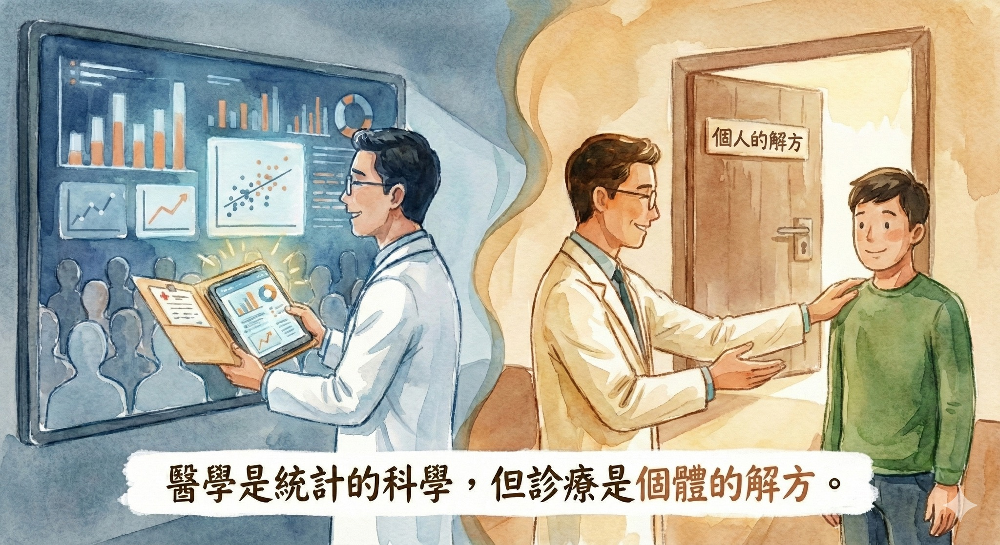

隨手記錄最棒的回饋，不是按讚數，而是看見患者「終於找到出口」的那份喜悅
【 隨手記錄最棒的回饋，不是按讚數，而是看見患者「終於找到出口」的那份喜悅 】
「醫師，我真的困擾好久了...直到滑到你那篇談『脖子會造成頭暈』的紀錄，我才覺得：天啊！會不會這就是在說我！」
-
前幾天診間來了一位患者，長期飽受不明原因的頭暈與頭痛困擾。
起初，她一直以為是內科問題，跑遍了耳鼻喉科、神經內科，藥吃了、針打了、檢查做了一大圈，報告都說正常。但那種「浮浮的、暈暈的」感覺卻真實存在，甚至讓她開始懷疑自己是不是心理生病了。
「我真的不知道該找誰...」
這是她坐在診間第一句對我說的話。這句話，也是許多被怪病纏身、求助無門的民眾，內心最深沉的恐慌——比病痛本身更折磨人。
直到她在臉書上看到我分享關於 「胸鎖乳突肌 (SCM)」 的案例，才驚覺：「原來問題可能不在內臟，而在肌肉？」
-
💡 文字，是迷宮中的「新路標」
經過觸診評估，果不其然，她脖子前側的那兩條「導航鋼索」早已緊繃僵硬。當我們透過肌筋膜乾針與徒手治療，精準釋放了鎖死的肌肉與神經後，她起身的眼神變得清亮，困擾許久的暈眩感終於消退。
她鬆了一口氣對我說：「原來，我的身體沒有壞掉，只是這裡卡住了。」
-
🏔️ 醫學是統計的科學，但診療是個體的解方
當然，臨床現場並非總是童話故事。我也常遇到結構複雜、久病難癒的「大魔王」等級患者；我承認，並不是每個人來到診間，都能像她一樣立刻獲得戲劇性的痊癒。踢鐵板也都每天家常便飯。
但這反而讓我更確信「隨手紀錄」的意義。
當年老師曾說過一段話，至今仍是我行醫的信念：
「即便某個觀點或療法的有效率只有 10%，在統計學上看似微不足道；但對那 10% 的人來說，這就是他們的 100%。這份改變，對這 10% 的人與醫師/治療師來說，就是意義非凡！」
我利用看診空檔整理這些案例，目的不是為了流量，而是希望這些文字能成為主流醫學下相對少數的群體面對疾病時的「另一種切入點」。
就像這位患者，這篇紀錄或許只是一個小小的契機，讓她在面對「檢查都正常卻還是不舒服」的困惑時，多了一個探索的方向，不再陷入「不知道該找誰」的焦慮中。
當文字能成為線索，或許能讓久病的人少走一段冤枉路，真正解決問題並脫離痛苦，對我來說，這就是最大的成就感。
-
👨⚕️ 繼續當個「引路人」
這提醒了我，身為醫師，我們的職責不僅僅是在診間裡施針用藥，更要透過正確的衛教宣導，減少資訊的落差。
如果你也有找不出原因的痛，或者覺得身體怪怪的卻不知道該找誰，請別輕易灰心。或許，答案就藏在某個被忽略的視角裡，等著我們去解開。
我會繼續紀錄下去，為了每一位正在尋找答案的你。
#醫病故事 #診間紀錄 #胸鎖乳突肌 #SCM #暈眩 #不明頭痛 #中醫針傷 #中醫徒手 #醫者初心
太初中醫診所 東門中醫
中醫師 黃彥鈞
